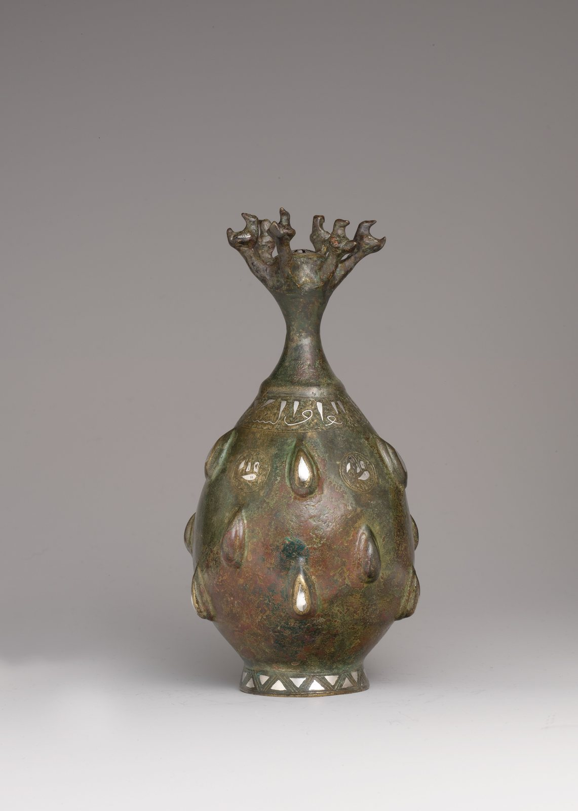

今日一句话总览
全球视觉艺术今天呈现两条并行主线：一边是大型机构加速扩容、开馆与重写经典叙事，另一边是政治干预、AI 署名与竞赛规则迫使文化机构重新界定自主性和“人的创作”。亚洲与中东的机构建设尤其活跃，从 Kiaf SEOUL、深圳自然博物馆到古根海姆阿布扎比，区域文化基础设施继续增厚。
信息来源与检索范围
- 检索时间：2026-08-01 09:01—09:18（中国标准时间 CST，UTC+8）。
- 覆盖地区：北美、欧洲、东亚、东南亚、澳大利亚、中东、拉丁美洲；非洲过去 72 小时可核验的高质量新增较少，未以弱相关内容补数。
- 主要来源：The Metropolitan Museum of Art、Whitney Museum、BMW Group、UNESCO、Art Basel、The Art Newspaper、Hyperallergic、Artnet News、Artsy、Ocula、NPR、SCMP、Al-Monitor、Google News RSS 聚合索引等。
- 时间范围：优先 2026-07-30 至 2026-08-01（过去 24—72 小时）；技术、政策和区域补充扩展至 2026-07-25（过去 7 天），均在条目中注明。
- 访问失败 / 不确定项：部分新闻原站经 Google News 跳转时浏览器超时，故以下若未取得直链，保留可点击的 Google News 原始索引链接并标明原始媒体；付费墙内细节不作推断。若报道标题或可见摘要未给出展览闭幕日，则明确写“待机构页确认”，不补造日期。
开放图像说明
- 配图：《带喷口的瓶，12世纪后半叶》；The Metropolitan Museum of Art Open Access，Public Domain。
- 配图用于补充视觉艺术史与博物馆公共叙事，不是新闻事件现场照片。
一、必看头条（4 条）
1. 美国政府介入史密森学会叙事，争议从“展览内容”升级为“入口警示”
- 地区 / 机构：美国华盛顿特区 / Smithsonian Institution
- 来源：The Art Newspaper；备用：The New York Times 后续报道
- 时间：首轮报道 2026-07-28；后续 2026-07-31（7 日扩展范围）
- 事件摘要：报道显示，美国政府要求在史密森博物馆展览入口设置提示，警告观众其中可能含有被政府认定为带政治偏向或不准确的美国历史叙事；随后又出现由政府方面推动的“爱国”展览。
- 为什么重要：这不再只是单件作品或标签措辞之争，而是行政权力直接介入博物馆解释框架。对策展自主、学术审稿和公共机构治理都是高风险先例。
- 可延伸观察：关注史密森董事会、馆长群体、美国博物馆联盟及学界是否发布正式回应；也要观察警示牌最终措辞和法律依据。
2. Kiaf SEOUL 2026 公布 175 家参展商，迎来第 25 届
- 地区 / 机构：韩国首尔 / Kiaf SEOUL
- 来源：Artsy
- 时间：2026-07-31
- 事件摘要：Kiaf SEOUL 宣布第 25 届共有 175 家参展商。报道可见信息未列完整展期与分区名单，需以展会后续页面为准。
- 为什么重要：参展规模说明首尔继续作为亚洲秋季交易季的重要节点。对画廊而言，真正的判断点不是总数，而是韩国本地、亚洲区域与欧美画廊的比例及重复参展率。
- 可延伸观察：与 Frieze Seoul 的展期协同、卫星展扩张、日韩及东南亚画廊占比，以及年轻画廊的成本承压。
3. 古根海姆阿布扎比被报道将于 12 月开放
- 地区 / 机构：阿联酋阿布扎比 / Guggenheim Abu Dhabi
- 来源：Ocula
- 时间：2026-07-29（7 日扩展范围）
- 事件摘要：Ocula 报道该馆计划于 2026 年 12 月开放。具体开馆日、首展清单和票务安排仍应等待机构正式页面逐项确认。
- 为什么重要：这是萨迪亚特文化区全球博物馆版图的关键拼图，也将检验“全球现代艺术史”如何在海湾地区被重新编排，而不是简单移植欧美范式。
- 可延伸观察：首展中西亚、北非、南亚艺术所占比例；馆藏来源、劳工与建筑运营透明度；与卢浮宫阿布扎比的叙事差异。
4. 生成式 AI 作品赢得州级海报竞赛，俄亥俄州博会拟改规则
- 地区 / 机构：美国俄亥俄州 / Ohio State Fair
- 来源：The Columbus Dispatch
- 时间：2026-07-31
- 事件摘要：在 AI 生成海报赢得竞赛后，主办方表示将调整规则。现阶段可确认的是“拟改规则”，并非已经公布完整的新规文本。
- 为什么重要：AI 争议正从抽象版权讨论进入征集、评审、奖金和署名的具体制度层。任何开放征集都需要预先定义允许的工具、披露义务和证据标准。
- 可延伸观察：新规是否区分“AI 辅助”与“主要由模型生成”，是否要求提交过程文件，以及对训练数据授权如何表述。
二、最新展览与展讯（7 条）
1. 古根海姆大型展回看波普艺术的起源与遗产
- **地点 / 时间**：纽约 Solomon R. Guggenheim Museum；消息发布于 2026-07-31，展期待馆方页面确认。
- **来源**：The New York Times
- **主题 / 亮点**：从“起源”到“遗产”的长时段框架，提示展览可能不只重陈美国波普经典，还会讨论其后续视觉文化影响。
- **适合关注**：研究战后艺术、消费图像、广告与当代视觉传播者。启发在于：经典流派重展的价值，应来自叙事结构更新，而非名作集合。
2. 大都会博物馆将呈现 Si Lewen《Parade》绘画组曲
- **地点 / 时间**：纽约 The Met；官方新闻发布于 2026-07-31，具体开放与闭幕日待机构页确认。
- **来源**：The Metropolitan Museum of Art
- **主题 / 亮点**：这组无字绘画循环受艺术家二战前及战争时期经历塑造，以连续图像而非文字讲述暴力、游行与历史记忆。
- **适合关注**：漫画、图像叙事、战争记忆和博物馆教育从业者。可将作品作为“无文字视觉阅读”的课堂范例。
3. 深圳自然博物馆正式开门迎客
- **地点 / 时间**：中国深圳；2026-07-31 报道开馆。
- **来源**：South China Morning Post
- **主题 / 亮点**：这是自然史内容与新建筑、沉浸展示、标本陈列相结合的新文化设施。
- **适合关注**：展陈设计、科学可视化、亲子教育团队。尤其值得考察建筑动线如何把宏观自然史转化为可理解的尺度。
4. 宝马艺术车 20 位艺术家、50 年项目在慕尼黑重聚
- **地点 / 时间**：德国慕尼黑 BMW Welt；2026-07-28 开幕（过去 7 日）。
- **来源**：BMW Group
- **主题 / 亮点**：20 位艺术家的艺术车在项目 50 周年节点集中展示，连接工业设计、品牌委托、速度文化与艺术史。
- **适合关注**：跨界创作者、品牌艺术项目策划人。应同时追问：企业收藏如何避免只把艺术当作视觉包装。
5. Jameel Arts Centre 以“历史的线索”组织材料与记忆
- **地点 / 时间**：阿联酋迪拜 Jameel Arts Centre；报道于 2026-07-31，具体展期待机构页确认。
- **来源**：Al-Monitor
- **主题 / 亮点**：报道以“Threads of history”为题，指向纺织、线性结构或档案线索与地区历史之间的关联；具体作品名单不在可见摘要中，本文不作补写。
- **适合关注**：中东当代艺术、材料文化和去殖民档案实践研究者。
6. Parrish Art Museum 探索材料性与景观
- **地点 / 时间**：美国纽约州 Water Mill / Parrish Art Museum；报道于 2026-07-31，展期待机构确认。
- **来源**：Whitewall
- **主题 / 亮点**：把材料性与长岛景观并置，适合观察地方地理如何进入雕塑、装置和展示空间。
- **适合关注**：场域特定创作、生态艺术和区域美术馆策展者。
7. 亚洲补充：香港唐人当代艺术中心呈现 Von Wolfe《Eternal Flames》
- **地点 / 时间**：中国香港 / Tang Contemporary Art；2026-07-30 发布，具体展期以画廊页为准。
- **来源**：Ocula 展讯
- **主题 / 亮点**：题名强调持续燃烧与永恒性；目前检索到的是展讯入口，作品媒介和策展文本应在参观前复核。
- **适合关注**：香港画廊生态、当代绘画和新媒体交叉实践者。
三、艺术事件 / 机构动态 / 市场与政策（5 条）
1. Low Kee Hong 获任第 26 届悉尼双年展艺术总监
- **地区 / 机构**：澳大利亚 / Biennale of Sydney；新加坡策展人 Low Kee Hong
- **来源**：Ocula
- **时间**：2026-07-29（7 日扩展）
- **摘要与意义**：任命显示新加坡及东南亚策展网络在国际双年展体系中的影响力继续上升。值得观察其是否将跨亚洲的表演、公共性和城市研究经验带入悉尼。
2. Art Basel 与迈阿密海滩租约谈判被报道或可节省 900 万美元
- **地区 / 机构**：美国迈阿密海滩 / Art Basel Miami Beach
- **来源**：Artnet News
- **时间**：2026-07-31
- **摘要与意义**：报道标题所述节省额为“可能”，并非已经落袋。它揭示大型艺博会与城市会展地产之间的议价关系；成本变化是否传导到画廊展位费，才是市场真正关心的问题。
3. Aspen Art Fair 公布 2026 获奖者
- **地区 / 机构**：美国科罗拉多州 Aspen Art Fair
- **来源**：Ocula
- **时间**：2026-07-31
- **摘要与意义**：Zanele Muholi 与 Tschabalala Self 等进入获奖名单。奖项把交易型艺博会进一步变成声誉生产平台，也提高了对评委组成和奖项资源分配透明度的要求。
4. Todd Caissie 出任 Montclair Art Museum 负责人
- **地区 / 机构**：美国新泽西州 / Montclair Art Museum
- **来源**：Hyperallergic
- **时间**：2026-07-30
- **摘要与意义**：地方综合美术馆的新领导层往往直接影响社区项目、藏品激活和筹资策略。后续应关注其百日计划，而不只看任命简历。
5. 巴拿马加强公众接触水下文化遗产
- **地区 / 机构**：巴拿马 / UNESCO
- **来源**：UNESCO
- **时间**：2026-07-29（7 日扩展）
- **摘要与意义**：水下遗产的“可接近性”涉及数字记录、潜水参访、在地教育与反盗捞的平衡。它提醒文博传播不能只以把实物搬进展柜为目标。
四、技术、知识与新观念（5 条）
1. Whitney 发布“artport：互联网艺术史”
- **来源**：Whitney Museum of American Art
- **时间 / 标签**：2026-07-30；#网络艺术 #数字保存 #机构档案
- **摘要**：Whitney 以 artport 为入口回顾互联网艺术史，强调浏览器、网站与线上委托本身就是作品环境。
- **启发**：数字艺术收藏不只保存文件，还要保存运行依赖、交互路径和时代网络语境；机构应把“可迁移性说明”纳入收藏协议。
2. LSU Museum of Art 推出数字孪生
- **来源**：Louisiana State University
- **时间 / 标签**：2026-07-31；#数字孪生 #3D #无障碍
- **摘要**：该馆发布数字孪生项目，把实体空间映射为可远程浏览和教学使用的数字环境。
- **启发**：判断数字孪生价值应看它是否支持策展预演、无障碍导航、藏品研究和课程，而非只看“线上漫游”的视觉新奇。
3. NPR 探访以“机器是合作者”为立场的新 AI 艺术博物馆
- **来源**：NPR
- **时间 / 标签**：2026-07-29（7 日扩展）；#AI艺术 #作者性 #新机构
- **摘要**：报道以“机器是合作者”概括该馆的策展立场。由于可见索引未完整显示馆名与开馆细节，本报不额外补写。
- **启发**：把机器称为“合作者”并不能自动解决训练数据、劳动归属和碳成本；策展文本必须把技术链条说清楚。
4. Art Basel 讨论：AI 不会杀死艺术，但会改变价值判断
- **来源**：Art Basel
- **时间 / 标签**：2026-07-27（7 日扩展）；#艺术价值 #AI #市场
- **摘要**：文章把问题从“AI 是否取代艺术家”移到“艺术价值如何被重新衡量”。
- **启发**：未来价值可能更依赖过程可追溯性、独特语境、社会关系和持续实践，而不只依赖图像稀缺性。这是观点文章，不等同于市场统计结论。
5. Refik Anadol 首本专著回溯其数字艺术方法演变
- **来源**：Wallpaper*
- **时间 / 标签**：2026-07-29（7 日扩展）；#出版 #数据艺术 #工作方法
- **摘要**：专著以过程和演变为线索，而不是只呈现大型沉浸作品的完成图。
- **启发**：对数字艺术教育而言，“数据来源—模型—空间适配—维护”的过程档案，比单张视觉效果图更能建立可批评、可传承的方法论。
五、今日组合观察
- **博物馆正在成为政治叙事的前线。** 史密森入口警示要求与政府推动的“爱国”展览相互印证，说明争夺已从馆内标签扩展到观众进入展览前的解释框架。策展自主需要制度和公开审稿流程保护，而不能只依赖馆长个人声望。
- **亚洲—中东文化基础设施继续加速。** Kiaf SEOUL 的 175 家参展商、深圳自然博物馆开馆、古根海姆阿布扎比拟于 12 月开放，共同显示展会、城市博物馆和国际旗舰机构三种基础设施同步扩张；真正值得检验的是本地知识生产是否同步增长。
- **数字转型从“线上展览”进入保存与运营层。** Whitney 的互联网艺术史和 LSU 的数字孪生，分别对应数字作品保存、实体空间映射。两者都要求机构长期维护技术依赖，而非完成一次性项目即告结束。
- **AI 治理开始落到规则文本。** 俄亥俄州博会拟改竞赛规则，与 Art Basel 关于价值判断的文章形成一实一虚的对照：前者要求可执行的披露与评审机制，后者提供价值观层面的讨论。
- **机构影响力正通过“任命 + 区域网络”重新分配。** Low Kee Hong 主导下一届悉尼双年展，是东南亚策展经验进入国际大型展事核心位置的信号；后续要看是否带来艺术家地理结构和工作方法的实质变化。
六、给创作者 / 策展人 / 艺术教育者的启发
- **给创作者：**
- 参加征集前主动保存草图、提示词、版本历史、素材授权和模型信息；不要等主办方追问才补证据。
- 数字作品交付时附上运行环境、依赖、替代展示方案和迁移许可，让作品具有长期可保存性。
- 从 Si Lewen 的连续图像与 BMW Art Cars 的跨媒介委托中学习：叙事结构和载体关系往往比单幅“强图像”更能形成作品生命。
- **给策展人 / 空间运营者：**
- 为争议性历史叙事建立公开的研究、同行审稿和更正机制，以程序透明抵抗行政性简化。
- 建数字孪生前先定义用户任务：无障碍、教学、布展模拟或远程研究；不要把扫描本身当成果。
- 面对新馆和大展，不只公布面积、明星名单和参展商总数，也应公开地区比例、合作方式、劳工与维护逻辑。
- **给艺术教育者：**
- 可用俄亥俄州博会事件设计一堂“制定 AI 艺术竞赛规则”的模拟课，让学生同时扮演作者、评委和权利人。
- 以 Whitney artport 训练学生区分“数字化的艺术”与“网络原生艺术”。
- 以无字图像组曲、自然史展陈和水下遗产为例，练习三种非传统知识传播：序列叙事、空间叙事、不可移动遗产的远程叙事。
七、今日可收藏链接
- 史密森被要求设置“政治偏向”警示 — 博物馆自主与公共历史争议的核心案例。
- Kiaf SEOUL 2026 公布 175 家参展商 — 观察亚洲秋季艺博会格局。
- 古根海姆阿布扎比拟于 12 月开馆 — 海湾博物馆版图的重要节点。
- 俄亥俄州博会拟修改 AI 竞赛规则 — AI 披露与评审制度的现实样本。
- The Met：Si Lewen《Parade》 — 无字序列图像与战争记忆。
- 深圳自然博物馆开馆 — 科学可视化与新馆动线观察对象。
- Whitney：artport 互联网艺术史 — 网络原生艺术与数字保存入口。
- LSU Museum of Art 数字孪生 — 从线上漫游走向空间运营工具。
- Low Kee Hong 主导第 26 届悉尼双年展 — 东南亚策展网络国际化的重要任命。
- UNESCO：巴拿马水下文化遗产可接近性 — 保护、访问与公共教育的平衡案例。
- Art Basel：AI 将改变艺术价值判断 — 从替代焦虑转向价值机制的观点文章。
- BMW Art Cars 50 周年重聚 — 企业委托艺术长期项目样本。
八、明日追踪建议
- **史密森后续回应**：警示牌是否实际安装、准确措辞、馆方与学界声明及潜在法律挑战。
- **古根海姆阿布扎比正式公告**：锁定具体开馆日、首展、馆藏来源和地区艺术家比例。
- **Kiaf SEOUL 完整名单**：统计 175 家画廊的国家/地区、首次参展和回归比例，并与 Frieze Seoul 对照。
- **俄亥俄州博会 AI 新规文本**：追踪是否要求提示词、过程文件、模型与训练数据披露。
- **深圳自然博物馆开馆反馈**：观察预约压力、无障碍体验、标本信息层级和沉浸技术是否服务于科学理解。
---